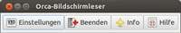
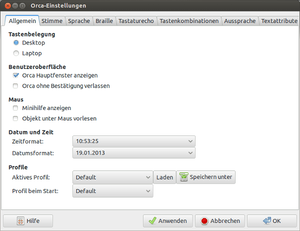

Orca
Dieser Artikel wurde für die folgenden Ubuntu-Versionen getestet:
Ubuntu 16.04 Xenial Xerus
Ubuntu 14.04 Trusty Tahr
Zum Verständnis dieses Artikels sind folgende Seiten hilfreich:
Orca  ist der in Python verfasste Screen-Reader der GNOME-Desktop-Umgebung, und als solcher Bestandteil der Ubuntu-Standard-Installation. Orca greift für die Sprachausgabe standardmäßig auf
ist der in Python verfasste Screen-Reader der GNOME-Desktop-Umgebung, und als solcher Bestandteil der Ubuntu-Standard-Installation. Orca greift für die Sprachausgabe standardmäßig auf speech-dispatcher zurück, aber es können verschiedene Sprach-Synthesizer zum Einsatz kommen. Für deutschsprachige Ausgaben empfiehlt sich die Verwendung von eSpeak.
Es ist jedoch auch möglich, SVOX-Pico zu verwenden, wenngleich dieses nicht so viele Einstellungsmöglichkeiten hat wie eSpeak. Praktisch lässt sich beispielsweise die Sprechgeschwindigkeit nicht richtig einstellen, auch wenn im Einstellungsfenster im Reiter "Stimme" eine hohe Sprechgeschwindigkeit eingestellt ist.
Orca liefert außerdem eine Bildschirmlupe, die Ausgabe kann zudem auch in Brailleschrift erfolgen. Dabei ist das Programm sehr vielseitig konfigurierbar, sodass blinde bzw. Menschen mit einer Sehbeeinträchtigung/Behinderung die Ausgaben sehr dezidiert für spezielle unterschiedliche Bedürfnisse anpassen können.
Installation¶
Orca ist in einer Standard-Ubuntu-Installation bereits installiert, ansonsten kann er über folgendes Paket installiert [1] werden:
gnome-orca
 mit apturl
mit apturl
Paketliste zum Kopieren:
sudo apt-get install gnome-orca
sudo aptitude install gnome-orca
Gestartet wird Orca im Terminal[2], ansonsten kann auch ein Starter im Hauptmenü angelegt werden[3]. Wer Orca regelmäßig nutzt, kann auch im Programm einstellen, dass es gleich beim Hochfahren des Rechners aktiviert wird.
Konfiguration¶
Beim ersten Aufruf von Orca erfolgt eine Einstellungsroutine, in der parallel optisch und auch akustisch geführt die gewünschten Einstellungen zur Sprache, zum zu verwendenden Synthesizer, und den Angaben, was akustisch wiedergeben werden soll, gemacht werden. Die Wiedergabe des jeweiligen Punktes bricht mit dem Bedienen der Eingabetaste ab, sodass nicht erst alle möglichen Einträge vorgelesen werden müssen, wenn die Eingabe erfolgt ist. Nach Beendigung dieses Erstaufrufes wird der Benutzer ab- und wieder angemeldet, damit die Einstellungen übernommen werden können.
 Die hier gemachten Einstellungen lassen sich später über das Konfigurationsfenster korrigieren und erweitern. Nach dem Start erscheint zunächst ein kleines Fenster mit vier Tasten ("Einstellungen, Beenden, Hilfe, Info"), mit der ersten wird der umfangreiche Konfigurations-Editor geöffnet.
Unter "Allgemein" wird das Tastaturlayout festgelegt, außerdem kann bestimmt werden, ob eine Bestätigung beim Verlassen erfolgen, der Tastaturzugriff über gksu verhindert, ToolTips ("Minihilfe") angezeigt, das kleine "Hauptfenster" eingeblendet, Orca direkt beim Systemstart aktiviert, und die Eigenschaften des Fensters unter dem Mauszeiger ausgegeben werden sollen. Außerdem lässt sich das Datums- und Uhrzeit-Format festlegen.
 Unter "Sprache" wird das zu nutzende Sprachausgabesystem, der Synthesizer sowie die zu verwendende Stimme ausgewählt, und konfiguriert (Geschwindigkeit, Tonhöhe, Lautstärke). Mit "Stimmeneinstellung" lassen sich (wenn der verwendete Synthesizer das zulässt) für verschiedenen Bildschirm/Textelement unterschiedliche Stimmen oder zumindest Tonhöhen, Sprechgeschwindigkeit oder Lautstärke festlegen. Im unteren Teil lassen sich dezidierte Angaben zur Sprachausgabe machen, z.B. welche Satzzeichen gesprochen, wie ausführlich die Wiedergabe sein soll, und welche zusätzlichen Informationen zur Formatierung oder Position eines Textes gemacht werden ("Kindposition sprechen" gibt beispielsweise aus, an welcher Position sich ein Eintrag in einem Menü befindet, also z.B. "dritter vom sechs Einträgen").
Im "Braille"-Reiter werden die Angaben zur Verwendung der Blindenschrift gemacht, auch Blindenkurzschrift lässt sich beispielsweise aktivieren. Unter "Tastaturecho" lässt sich festlegen, welche Tastaturanschläge direkt akustisch ausgegeben werden sollen; außerdem kann man festlegen, ob die Wiedergabe zeichen-, wort- oder zeilenweise erfolgen soll.
Die Funktionen der "Lupe" werden im entsprechenden Reiter aktiviert und eingestellt (Vergrößerungsfaktor, Ränder, Teilausschnitte des Bildschirmes festlegen, Aktivierung der Maustasten etc.). Allerdings lassen sich die Funktionen nur bei eingestellter Lupenfunktion überhaupt einstellen, das funktioniert aber nur sehr eingeschränkt (siehe Probleme). Die umfangreichen Einstellungsmöglichkeiten sind im Handbuch  ausführlich beschrieben.
ausführlich beschrieben.
Im Reiter "Tastenkombinationen" sind die zahlreichen Möglichkeiten der Bedienung aufgelistet, dabei ist für die Standard-Tastenkombination meist auch eine Alternative vorgesehen. Diese Kombinationen können frei gewählt und verändert werden; allerdings sollte man darauf achten, dass für den Gnome-Desktop schon etliche Kombinationen verwendet werden.
"KA" steht dabei für die Tasten des Nummernblocks rechts neben den Standard-Tasten. Etliche Funktion sind standardmäßig nicht belegt, da diese z.T. sehr speziell und nur für bestimmte Nutzer sinnvoll sind.
Unter "Aussprache" lassen sich falsch wiedergegebene Wörter mit einer korrigierten Version eintragen, z.B. Abkürzungen, oder häufig verwendete fremdsprachige Ausdrücke. Diese Liste kann auch für verschiedene Anwendungen jeweils einzeln geführt und eingesetzt werden.
Bei "Textattributen" lässt sich festlegen, ob noch weitere Informationen zu den Elemente, Farbe, Layout, Textausrichtung etc. ausgegeben werden sollen; die entsprechenden Attribute müssen dann aktiviert werden. Außerdem lässt sich auch einstellen, dass die Attribute nur dann vorgelesen werden sollen, wenn sie von einem vorgegebenen Wert abweichen
Neuere Orca-Versionen¶
Ab Orca 3.8 und neuer (z.B. in Ubuntu 14.04 3.10 )gibt es kein klassisches Einstellungsfenster mehr, welches bei Orca 3.4 noch vorhanden war. Der Screen-Reader wird auch nicht mehr über das Menü gestartet, sondern mit Alt + Super + S . Gleiches gilt für das Beenden. Auch wenn noch immer in englischen Mailinglisten zum Screenreader Orca behauptet wird, dass man für Ubuntu 14.04 die Orca-Version 3.20 nicht bekäme, muss dem widersprochen werden, da das Vinux-Project in seinen PPAs eine Version 3.20.1 zur Verfügung stellt.
Bedienung¶
Wenn Orca läuft, werden die voreingestellten Angaben automatisch zur Wiedergabe verwendet; über etliche Tastenkürzel lassen sich bestimmte Aufgaben, Navigieren auf der Seite, Markieren von Text etc. bewerkstelligen. Beendet wird Orca entweder über das "Hauptfenster -> Beenden", oder über die Tastenkombination Einfg + Q bzw. ⇩ + Q . Sollte Orca "hängen", kann man über Strg + Alt + F1 auf ein externes Terminal wechseln und Orca dort mit dem Befehl
killall orca
"gewaltsam" beenden; mit Strg + Alt + F7 kehrt man auf auf die grafische Oberfläche zurück.
Tastenkürzel¶
Orca kann natürlich komplett über Tastenkürzel gesteuert werden; dabei ist eine bestimmte "Orcamodifikator"-Taste für das Senden von Befehlen an Orca vorgesehen, für das Desktop-Layout ist das die
Einfg -Taste, für das Laptop-Layout die
⇩ -Feststell-Taste. Eine komplette Auflistung findet sich in den "Einstellungen -> Tastenkombinationen". Es kann allerdings zu Problemen mit "feststeckenden" Tasten kommen, siehe diesen Bugreport .
Über das Terminal lässt sich Orca auch mit allen Optionen starten, nähere Einzelheiten dazu in der Manpage des Programms.
Probleme¶
Die Konfiguration der Stimmen über den speech-dispatcher (dort existieren etliche .conf-Dateien in /etc/speech-dispatcher/modules bzw. /usr/share/speech-dispatcher/conf/modules für die verschiedene Sprach-Synthesizer) ist nicht ganz einfach. Orca scheint auch bei dem Wechsel zwischen verschiedenen Sprachgeneratoren Probleme zu haben, und stürzt dann ab, oder startet gar nicht (Meldung im Terminal TIMEOUT: something has hung. Aborting.). Ggf. muss man sich als Benutzer ab und wieder anmelden, oder sogar der Rechner komplett neu gestartet werden, um Orca doch wieder verwenden zu können.
Die Lupenfunktion harmoniert anscheinend nicht mit allen Grafikkarten; ggf. sind bei aktivierter Funktion Teile des Bildschirms nicht lesbar. Die Aktivierung von Menüs etc. über die Maus funktioniert teilweise nicht, schon die Einstellungen für die Lupenfunktion lassen sich ggf. überhaupt nicht vornehmen. Orca setzt gnome-mag ein, es scheint Probleme mit dem X Server und COMPOSITE zu geben (siehe Magnification ). Etwas Besserung verschafft es, für die "Visuellen Effekte" (unter GNOME in "System -> Einstellungen -> Erscheinungsbild") die höchstmögliche Stufe "Extra" zu aktivieren; das setzt allerdings eine schnelle Grafikkarte voraus.
Alternativen¶
Sprachausgabe
 Übersichtsseite
ÜbersichtsseiteBarrierefreiheit
ÜbersichtsseiteJovie - Der KDE-Sprachausgabedienst, allerdings wesentlich weniger Funktionsumfang, und momentan auch noch nicht ausgereift
Links¶
Orca
auf live.gnome.orgArtikel zu Orca
auf Linux-für-Blinde.deBLINDzeln.org
- Community für Sehbehinderte und Blinde
- Erstellt mit Inyoka
-
 2004 – 2017 ubuntuusers.de • Einige Rechte vorbehalten
2004 – 2017 ubuntuusers.de • Einige Rechte vorbehalten
Lizenz • Kontakt • Datenschutz • Impressum • Serverstatus -
Serverhousing gespendet von